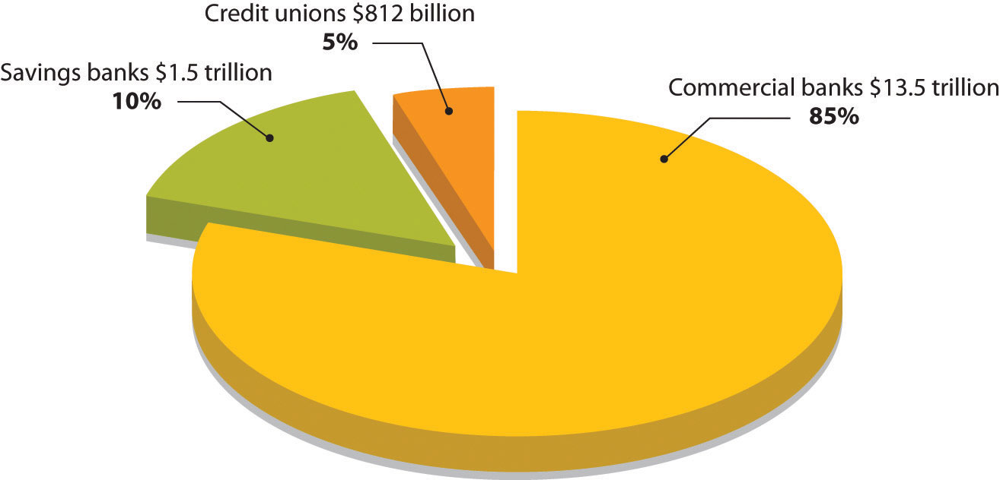
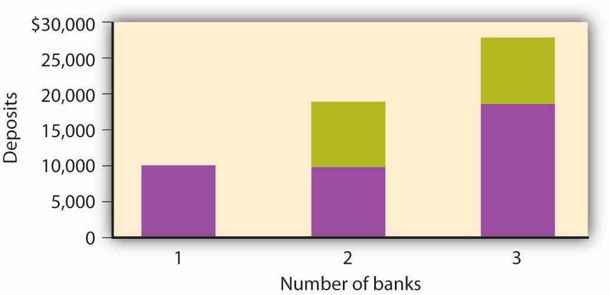
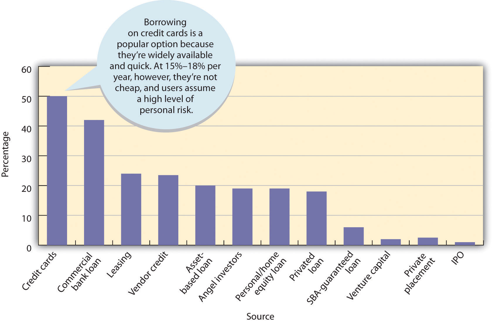
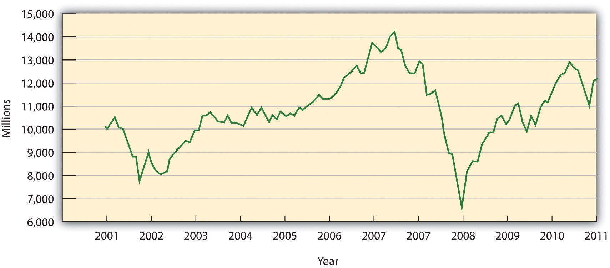
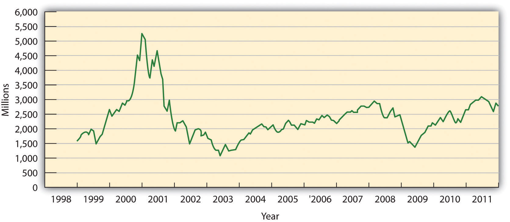
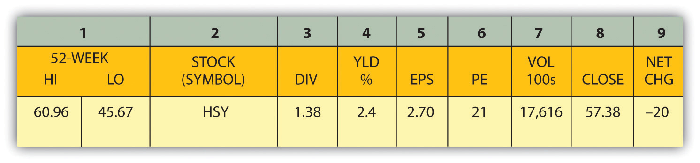

How can you manage to combine a fantastic business idea, an efficient production system, a talented management team, and a creative marketing plan…and still go under? It’s not so hard if you don’t understand finance. Everyone in business—not finance specialists alone—needs to understand how the U.S. financial system operates and how financial decisions affect an organization. Businesspeople also need to know how securities markets work. In this chapter, we’ll discuss these three interrelated topics. Let’s start by taking a closer look at one of the key ingredients in any business enterprise—money.
Finance is about money. So our first question is, what is money? If you happen to have one on you, take a look at a $5 bill. What you’ll see is a piece of paper with a picture of Abraham Lincoln on one side and the Lincoln Memorial on the other. Though this piece of paper—indeed, money itself—has no intrinsic value, it’s certainly in demand. Why? Because money serves three basic functions. MoneyAnything commonly accepted as a medium of exchange, measure of value, and store of value. is the following:
To get a better idea of the role of money in a modern economy, let’s imagine a system in which there is no money. In this system, goods and services are bartered—traded directly for one another. Now, if you’re living and trading under such a system, for each barter exchange that you make, you’ll have to have something that another trader wants. For example, say you’re a farmer who needs help clearing his fields. Because you have plenty of food, you might enter into a barter transaction with a laborer who has time to clear fields but not enough food: he’ll clear your fields in return for three square meals a day.
This system will work as long as two people have exchangeable assets, but needless to say, it can be inefficient. If we identify the functions of money, we’ll see how it improves the exchange for all the parties in our hypothetical set of transactions.
Money serves as a medium of exchange because people will accept it in exchange for goods and services. Because people can use money to buy the goods and services that they want, everyone’s willing to trade something for money. The laborer will take money for clearing your fields because he can use it to buy food. You’ll take money as payment for his food because you can use it not only to pay him but also to buy something else you need (perhaps seeds for planting crops).
For money to be used in this way, it must possess a few crucial properties:
Money simplifies exchanges because it serves as a measure of value. We state the price of a good or service in monetary units so that potential exchange partners know exactly how much value we want in return for it. This practice is a lot better than bartering because it’s much more precise than an ad hoc agreement that a day’s work in the field has the same value as three meals.
Money serves as a store of value. Because people are confident that money keeps its value over time, they’re willing to save it for future exchanges. Under a bartering arrangement, the laborer earned three meals a day in exchange for his work. But what if, on a given day, he skipped a meal? Could he “save” that meal for another day? Maybe, but if he were paid in money, he could decide whether to spend it on food each day or save some of it for the future. If he wanted to collect on his “unpaid” meal two or three days later, the farmer might not be able to “pay” it; unlike money, food could go bad.
Now that we know what money does, let’s tackle another question: How much money is there? How would you go about “counting” all the money held by individuals, businesses, and government agencies in this country? You could start by counting the money that’s held to pay for things on a daily basis. This category includes cash (paper bills and coins) and funds held in demand depositsChecking accounts that pay given sums to “payees” when they demand them.—checking accounts, which pay given sums to “payees” when they demand them.
Then, you might count the money that’s being “saved” for future use. This category includes interest-bearing accounts, time deposits (such as certificates of deposit, which pay interest after a designated period of time), and money market mutual fundsAccounts that pay interest to investors who pool funds to make short-term loans to businesses and the government., which pay interest to investors who pool funds to make short-term loans to businesses and the government.
Counting all this money would be a daunting task (in fact, it would be impossible). Fortunately, there’s an easier way—namely, by examining two measures that the government compiles for the purpose of tracking the money supply: M-1 and M-2.
So what’s the bottom line? How much money is out there? To find the answer, you can go to the Federal Reserve Board Web site. The Federal Reserve reports that in September 2011, M-1 was about $2.1 trillion and M-2 was $9.6 trillion.Federal Reserve, “Money Stock Measures,” Federal Reserve Statistical Release, http://www.federalreserve.gov/releases/h6/current/ (accessed November 6, 2011). Figure 13.2 "The U.S. Money Supply, 1980–2010" shows the increase in the two money-supply measures since 1980.
Figure 13.2 The U.S. Money Supply, 1980–2010

If you’re thinking that these numbers are too big to make much sense, you’re not alone. One way to bring them into perspective is to figure out how much money you’d get if all the money in the United States were redistributed equally. According to the U.S. Census Population Clock,U.S. Census Bureau, “U.S. World Population Clocks,” U.S. Census Bureau, http://www.census.gov/main/www/popclock.html (accessed November 7, 2011). there are more than three hundred million people in the United States. Your share of M-1, therefore, would be about $6,700 and your share of M-2 would be about $31,000.
Are credit cards a form of money? If not, why do we call them plastic money? Actually, when you buy something with a credit card, you’re not spending money. The principle of the credit card is buy-now-pay-later. In other words, when you use plastic, you’re taking out a loan that you intend to pay off when you get your bill. And the loan itself is not money. Why not? Basically because the credit card company can’t use the asset to buy anything. The loan is merely a promise of repayment. The asset doesn’t become money until the bill is paid (with interest). That’s why credit cards aren’t included in the calculation of M-1 and M-2.
Money serves three basic functions:
(AACSB) Analysis
Instead of coins jingling in your pocket, how would you like to have a pocketful of cowrie shells? These smooth, shiny snail shells, which are abundant in the Indian Ocean, have been used for currency for more than four thousand years. At one point, they were the most widely used currency in the world. Search “cowrie shells” on Google and learn as much as you can about them. Then answer the following questions:
For financial transactions to happen, money must change hands. How do such exchanges occur? At any given point in time, some individuals, businesses, and government agencies have more money than they need for current activities; some have less than they need. Thus, we need a mechanism to match up savers (those with surplus money that they’re willing to lend out) with borrowers (those with deficits who want to borrow money). We could just let borrowers search out savers and negotiate loans, but the system would be both inefficient and risky. Even if you had a few extra dollars, would you lend money to a total stranger? If you needed money, would you want to walk around town looking for someone with a little to spare?
Now you know why we have financial institutions: they act as intermediaries between savers and borrowers and they direct the flow of funds between them. With funds deposited by savers in checking, savings, and money market accounts, they make loans to individual and commercial borrowers. In the next section, we’ll discuss the most common types of depository institutions (banks that accept deposits), including commercial banks, savings banks, and credit unions. We’ll also discuss several nondepository institutions (which provide financial services but don’t accept deposits), including finance companies, insurance companies, brokerage firms, and pension funds.
Commercial banksFinancial institution that generates profits by lending funds and providing customers with services, such as check processing. are the most common financial institutions in the United States, with total financial assets of about $13.5 trillion (85 percent of the total assets of the banking institutions).Insurance Information Institute, Financial Services Fact Book 2010, Banking: Commercial Banks, http://www.fsround.org/publications/pdfs/Financial_Services_Factbook_2010.pdf (accessed November 7, 2011). They generate profit not only by charging borrowers higher interest rates than they pay to savers but also by providing such services as check processing, trust- and retirement-account management, and electronic banking. The country’s 7,000 commercial banks range in size from very large (Bank of America, J.P. Morgan Chase) to very small (local community banks). Because of mergers and financial problems, the number of banks has declined significantly in recent years, but, by the same token, surviving banks have grown quite large. If you’ve been with one bank over the past ten years or so, you’ve probably seen the name change at least once or twice.
Savings banksFinancial institution originally set up to provide mortgages and encourage saving, which now offers services similar to those of commercial banks. (also called thrift institutions and savings and loan associations, or S&Ls) were originally set up to encourage personal saving and provide mortgages to local home buyers. Today, however, they provide a range of services similar to those offered by commercial banks. Though not as dominant as commercial banks, they’re an important component of the industry, holding total financial assets of almost $1.5 trillion (10 percent of the total assets of the banking institutions).Insurance Information Institute, Financial Services Fact Book 2010, Banking: Commercial Banks, http://www.fsround.org/publications/pdfs/Financial_Services_Factbook_2010.pdf (accessed November 7, 2011). The largest S&L, Sovereign Bancorp, has close to 750 branches in nine Northeastern states.Todd Wallack, “Sovereign Making Hub its Home Base,” Boston.com, http://articles.boston.com/2011-08-16/business/29893051_1_sovereign-spokesman-sovereign-bank-deposits-and-branches (accessed November 7, 2011). Savings banks can be owned by their depositors (mutual ownership) or by shareholders (stock ownership).
To bank at a credit unionFinancial institution that provides services to only its members (who are associated with a particular organization)., you must be linked to a particular group, such as employees of United Airlines, employees of the state of North Carolina, teachers in Pasadena, California, or current and former members of the U.S. Navy. Credit unions are owned by their members, who receive shares of their profits. They offer almost anything that a commercial bank or savings and loan does, including savings accounts, checking accounts, home and car loans, credit cards, and even some commercial loans.Pennsylvania Association of Community Bankers, “What’s the Difference?,” http://www.pacb.org/banks_and_banking/difference.html (accessed November 7, 2011). Collectively, they hold about $812 billion in financial assets (around 5 percent of the total assets of the financial institutions).
Figure 13.3 "Where Our Money Is Deposited" summarizes the distribution of assets among the nation’s depository institutions.
Figure 13.3 Where Our Money Is Deposited
Finance companiesNondeposit financial institution that makes loans from funds acquired by selling securities or borrowing from commercial banks. are nondeposit institutions because they don’t accept deposits from individuals or provide traditional banking services, such as checking accounts. They do, however, make loans to individuals and businesses, using funds acquired by selling securities or borrowed from commercial banks. They hold about $1.9 trillion in assets.Insurance Information Institute, Financial Services Fact Book 2010, Banking: Commercial Banks, http://www.fsround.org/publications/pdfs/Financial_Services_Factbook_2010.pdf (accessed November 7, 2011). Those that lend money to businesses, such as General Electric Capital Corporation, are commercial finance companies, and those that make loans to individuals or issue credit cards, such a Citgroup, are consumer finance companies. Some, such as General Motors Acceptance Corporation, provide loans to both consumers (car buyers) and businesses (GM dealers).
Insurance companiesNondeposit institution that collects premiums from policyholders for protection against losses and invests these funds. sell protection against losses incurred by illness, disability, death, and property damage. To finance claims payments, they collect premiums from policyholders, which they invest in stocks, bonds, and other assets. They also use a portion of their funds to make loans to individuals, businesses, and government agencies.
Companies like A.G. Edwards & Sons and T. Rowe Price, which buy and sell stocks, bonds, and other investments for clients, are brokerage firmsFinancial institution that buys and sells stocks, bonds, and other investments for clients. (also called securities investment dealers). A mutual fundFinancial institution that invests in securities, using money pooled from investors (who become part owners of the fund). invests money from a pool of investors in stocks, bonds, and other securities. Investors become part owners of the fund. Mutual funds reduce risk by diversifying investment: because assets are invested in dozens of companies in a variety of industries, poor performance by some firms is usually offset by good performance by others. Mutual funds may be stock funds, bond funds, and money market fundsFund invested in safe, highly liquid securities., which invest in safe, highly liquid securities. (Recall our definition of liquidity in Chapter 12 "The Role of Accounting in Business" as the speed with which an asset can be converted into cash.)
Finally, pension fundsFund set up to collect contributions from participating companies for the purpose of providing its members with retirement income., which manage contributions made by participating employees and employers and provide members with retirement income, are also nondeposit institutions.
You can appreciate the diversity of the services offered by commercial banks, savings banks, and credit unions by visiting their Web sites. For example, Wells Fargo promotes services to four categories of customers: individuals, small businesses, corporate and institutional clients, and affluent clients seeking “wealth management.” In addition to traditional checking and savings accounts, the bank offers automated teller machine (ATM) services, credit cards, and debit cards. It lends money for homes, cars, college, and other personal and business needs. It provides financial advice and sells securities and other financial products, including individual retirement account (IRA)Personal retirement account set up by an individual to save money tax free until retirement., by which investors can save money that’s tax free until they retire. Wells Fargo even offers life, auto, disability, and homeowners insurance. It also provides electronic banking for customers who want to check balances, transfer funds, and pay bills online.See Wells Fargo, https://www.wellsfargo.com/ (accessed November 7, 2011).
How would you react if you put your life savings in a bank and then, when you went to withdraw it, learned that the bank had failed—that your money no longer existed? This is exactly what happened to many people during the Great Depression. In response to the crisis, the federal government established the Federal Depository Insurance Corporation (FDIC)Government agency that regulates banks and insures deposits in its member banks up to $250,000. in 1933 to restore confidence in the banking system. The FDIC insures deposits in commercial banks and savings banks up to $250,000. So today if your bank failed, the government would give you back your money (up to $250,000). The money comes from fees charged member banks.
To decrease the likelihood of failure, various government agencies conduct periodic examinations to ensure that institutions are in compliance with regulations. Commercial banks are regulated by the FDIC, savings banks by the Office of Thrift Supervision, and credit unions by the National Credit Union Administration. As we’ll see later in the chapter, the Federal Reserve System also has a strong influence on the banking industry.
What follows is an interesting, but scary, story about the current financial crisis in the banking industry and its effect on the economy. In the years between 2001 and 2005, lenders made billions of dollars in subprime adjustable-rate mortgages (ARMs) to American home buyers. Subprime loans are made to home buyers who don’t qualify for market-set interest rates because of one or more risk factors—income level, employment status, credit history, ability to make only a very low down payment. In 2006 and 2007, however, housing prices started to go down. Many homeowners with subprime loans, including those with ARMs whose rates had gone up, were able neither to refinance (to lower their interest rates) nor to borrow against their homes. Many of these homeowners got behind in mortgage payments, and foreclosures became commonplace—1.3 million in 2007 alone.Justin Lahart, “Egg Cracks Differ in Housing, Finance Shells,” Wall Street Journal, http://online.wsj.com/article/SB119845906460548071.html?mod=googlenews_wsj (accessed November 7, 2011). By April 2008, 1 in every 519 American households had received a foreclosure notice.RealtyTrac Inc., “Foreclosure Activity Increases 4 Percent in April,” realtytrac.com, http://www.realtytrac.com/content/press-releases/ (accessed November 7, 2011). By August, 9.2 percent of the $12 trillion in U.S. mortgage loans was delinquent or in foreclosure.Mortgage Bankers Association, “Delinquencies and Foreclosures Increase in Latest MBA National Delinquency Survey,” September 5, 2008, http://www.mbaa.org/NewsandMedia/PressCenter/64769.htm (accessed November 11, 2011); Charles Duhigg, “Loan-Agency Woes Swell from a Trickle to a Torrent,” nytimes.com http://www.nytimes.com/2008/07/11/business/11ripple.html?ex=1373515200&en= 8ad220403fcfdf6e&ei=5124&partner=permalink&exprod=permalink (accessed November 11, 2011).
The repercussions? Banks and other institutions that made mortgage loans were the first sector of the financial industry to be hit. Largely because of mortgage-loan defaults, profits at more than 8,500 U.S. banks dropped from $35 billion in the fourth quarter of 2006 to $650 million in the corresponding quarter of 2007 (a decrease of 89 percent). Bank earnings for the year 2007 declined 31 percent and dropped another 46 percent in the first quarter of 2008.Federal Deposit Insurance Corporation, Quarterly Banking Profile (Fourth Quarter 2007), http://www.2.fdic.gov/qbp/2007dec/qbp.pdf (accessed September 25, 2008); FDIC, Quarterly Banking Profile (First Quarter 2008), at http://www.2.fdic.gov/qbp/2008mar/qbp.pdf (accessed September 25, 2008).
Losses in this sector were soon felt by two publicly traded government-sponsored organizations, the Federal National Mortgage Association (Fannie Mae) and the Federal Home Loan Mortgage Corporation (Freddie Mac). Both of these institutions are authorized to make loans and provide loan guarantees to banks, mortgage companies, and other mortgage lenders; their function is to make sure that these lenders have enough money to lend to prospective home buyers. Between them, Fannie Mae and Freddie Mac backed approximately half of that $12 trillion in outstanding mortgage loans, and when the mortgage crisis hit, the stock prices of the two corporations began to drop steadily. In September 2008, amid fears that both organizations would run out of capital, the U.S. government took over their management.
Freddie Mac also had another function: to increase the supply of money available in the country for mortgage loans and new home purchases, Freddie Mac bought mortgages from banks, bundled these mortgages, and sold the bundles to investors (as mortgage-backed securities). The investors earned a return because they received cash from the monthly mortgage payments. The banks that originally sold the mortgages to Freddie Mac used the cash they got from the sale to make other loans. So investors earned a return, banks got a new influx of cash to make more loans, and individuals were able to get mortgages to buy the homes they wanted. This seemed like a good deal for everyone, so many major investment firms started doing the same thing: they bought individual subprime mortgages from original lenders (such as small banks), then pooled the mortgages and sold them to investors.
But then the bubble burst. When many home buyers couldn’t make their mortgage payments (and investors began to get less money and consequently their return on their investment went down), these mortgage-backed securities plummeted in value. Institutions that had invested in them—including investment banks—suffered significant losses.Shawn Tully, “Wall Street’s Money Machine Breaks Down,” Fortune, CNNMoney.com, November 12, 2007, http://money.cnn.com/magazines/fortune/fortune_archive/2007/11/26/101232838/index.htm (accessed November 7, 2011). In September 2008, one of these investment banks, Lehman Brothers, filed for bankruptcy protection; another, Merrill Lynch, agreed to sell itself for $50 billion. Next came American International Group (AIG), a giant insurance company that insured financial institutions against the risks they took in lending and investing money. As its policyholders buckled under the weight of defaulted loans and failed investments, AIG, too, was on the brink of bankruptcy, and when private efforts to bail it out failed, the U.S. government stepped in with a loan of $85 billion.See Greg Robb et al., “AIG Gets Fed Rescue in Form of $85 Billion Loan,” MarketWatch, September 16, 2008, http://www.marketwatch.com/story/aig-gets-fed-rescue-in-form-of-85-billion-loan (accessed November 7, 2011). The U.S. government also agreed to buy up risky mortgage-backed securities from teetering financial institutions at an estimated cost of “hundreds of billions.”Mortgage Bankers Association, “Delinquencies and Foreclosures Increase in Latest MBA National Delinquency Survey,” Press Release, September 5, 2008, http://www.mbaa.org/NewsandMedia/PressCenter/64769.htm (accessed November 7, 2011). And the banks started to fail—beginning with the country’s largest savings and loan, Washington Mutual, which had 2,600 locations throughout the country. The list of failed banks kept getting longer: by November of 2008, it had grown to nineteen.
The economic troubles that began in the banking industry as a result of the subprime crisis spread to the rest of the economy. Credit markets froze up and it became difficult for individuals and businesses to borrow money. Consumer confidence dropped, people stopped spending, businesses cut production, sales dropped, company profits fell, and many lost their jobs. It would be nice if this story had an ending (and even nicer if it was positive), but it might take us years before we know the ending. At this point in time, all we do know is that the economy is going through some very difficult times and no one is certain about the outcome. As we head into 2012, one in three Americans believe the United States is headed in the wrong direction. Our debt has been downgraded by Moody’s, a major credit rating agency. Unemployment seems stuck at around 9 percent, with the long-term unemployed making up the biggest portion of the jobless since records began in 1948. “As the superpower’s clout seems to ebb towards Asia, the world’s most consistently inventive and optimistic country has lost its mojo.”“America’s Missing Middle,” The Economist, November 2011, 15.
When you deposit money, your bank doesn’t set aside a special pile of cash with your name on it. It merely records the fact that you made a deposit and increases the balance in your account. Depending on the type of account, you can withdraw your share whenever you want, but until then, it’s added to all the other money held by the bank. Because the bank can be pretty sure that all its depositors won’t withdraw their money at the same time, it holds on to only a fraction of the money that it takes in—its reserves. It lends out the rest to individuals, businesses, and the government, earning interest income and expanding the money supply.
Precisely how do banks expand the money supply? To find out, let’s pretend you win $10,000 at the blackjack tables of your local casino. You put your winnings into your savings account immediately. The bank will keep a fraction of your $10,000 in reserve; to keep matters simple, we’ll use 10 percent. The bank’s reserves, therefore, will increase by $1,000 ($10,000 × 0.10). It will then lend out the remaining $9,000. The borrowers (or the parties to whom they pay it out) will then deposit the $9,000 in their own banks. Like your bank, these banks will hold onto 10 percent of the money ($900) and lend out the remainder ($8,100). Now let’s go through the process one more time. The borrowers of the $8,100 (or, again, the parties to whom they pay it out) will put this amount into their banks, which will hold onto $810 and lend the remaining $7,290. As you can see in Figure 13.4 "The Effect of the Money Multiplier", total bank deposits would now be $27,100. Eventually, bank deposits would increase to $100,000, bank reserves to $10,000, and loans to $90,000. A shortcut for arriving at these numbers depends on the concept of the money multiplierThe amount by which an initial bank deposit will expand the money supply., which is determined using the following formula:
Money multiplier = 1/Reserve requirementIn our example, the money multiplier is 1/0.10 = 10. So your initial deposit of $10,000 expands into total deposits of $100,000 ($10,000 × 10), additional loans of $90,000 ($9,000 × 10), and increased bank reserves of $10,000 ($1,000 × 10). In reality, the multiplier will actually be less than 10. Why? Because some of the money loaned out will be held as currency and won’t make it back into the banks.
Figure 13.4 The Effect of the Money Multiplier
(AACSB) Analysis
Does the phrase “The First National Bank of Wal-Mart” strike a positive or negative chord? Wal-Mart isn’t a bank, but it does provide some financial services: it offers a no-fee Wal-Mart Discovery credit card with a 1 percent cash-back feature, cashes checks and sells money orders through an alliance with MoneyGram International, and houses bank branches in more than a thousand of its superstores. Through a partnering arrangement with SunTrust Banks, the retailer has also set up in-store bank operations at a number of outlets under the cobranded name of “Wal-Mart Money Center by SunTrust.” A few years ago, Wal-Mart made a bold attempt to buy several banks but dropped the idea when it encountered stiff opposition. Even so, some experts say that it’s not a matter of whether Wal-Mart will become a bank, but a matter of when. What’s your opinion? Should Wal-Mart be allowed to enter the financial-services industry and offer checking and savings accounts, mortgages, and personal and business loans? Who would benefit if Wal-Mart became a key player in the financial-services arena? Who would be harmed?
(AACSB) Analysis
Congratulations! You just won $10 million in the lottery. But instead of squandering your newfound wealth on luxury goods and a life of ease, you’ve decided to stay in town and be a financial friend to your neighbors, who are hardworking but never seem to have enough money to fix up their homes or buy decent cars. The best way, you decide, is to start a bank that will make home and car loans at attractive rates. On the day that you open your doors, the reserve requirement set by the Federal Reserve System is 10 percent. What’s the maximum amount of money you can lend to residents of the town? What if the Fed raises the reserve requirement to 12 percent? Then how much could you lend? In changing the reserve requirement from 10 percent to 12 percent, what’s the Fed trying to do—curb inflation or lessen the likelihood of a recession? Explain how the Fed’s action will contribute to this goal.
Who decides how much banks should keep in reserve? The decision is made by the Federal Reserve SystemU.S. central banking system, which has three goals: price stability, sustainable economic growth, and full employment. (popularly known as “the Fed”), a central banking system established in 1913. Most large banks belong to the Federal Reserve System, which divides the country into twelve districts, each with a member-owned Federal Reserve Bank. The twelve banks are coordinated by a board of governors.
The Fed has three major goals:
Recall our definition of monetary policy in Chapter 1 "The Foundations of Business" as the efforts of the Federal Reserve System to regulate the nation’s money supply. We also defined price stability as conditions under which the prices for products remain fairly constant. Now, we can put the two concepts together: the Fed seeks to stabilize prices by regulating the money supply and interest rates. In turn, stable prices promote economic growth and full employment—at least in theory. To conduct monetary policy, the Fed relies on three tools: reserve requirements, the discount rate, and open market operations.
Under what circumstances would the Fed want to change the reserve requirement for banks? The purpose of controlling the money supply is primarily to lessen the threat of inflation (a rise in the overall price level) or recession (an economic slowdown gauged by a decline in gross domestic product). Here’s how it works (again, in theory). If the Fed raises the reserve requirement (for example, from 10 percent to 11 percent), banks must set aside more money. Consequently, they have less to lend and so raise their interest rates. Under these conditions, it’s harder and more expensive for people to borrow money, and if they can’t borrow as much, they can’t spend as much, and if people don’t spend as much, prices don’t go up. Thus, the Fed has lessened the likelihood of inflation.
Conversely, when the Fed lowers the reserve requirement (for example, from 10 percent to 9 percent), banks need to set aside less money. Because they have more money to lend, they keep interest rates down. Borrowers find it easier and cheaper to get money for buying things, and the more consumers buy, the higher prices go. In this case, the Fed has reduced the likelihood of a recession.
A 1 percent change in the reserve requirement, whether up to 11 percent or down to 9 percent, may not seem like much, but remember our earlier discussion of the money multiplier: because of the money-multiplier effect, a small change in the reserve requirement has a dramatic effect on the money supply. (For the same reason, the Fed changes reserve requirements only rarely.)
To understand how the Fed uses the discount rate to control the money supply, let’s return to our earlier discussion of reserves. Recall that banks must keep a certain fraction of their deposits as reserves. The bank can hold these reserve funds or deposit them into a Federal Reserve Bank account. Recall, too, that the bank can lend out any funds that it doesn’t have to put on reserve. What happens if a bank’s reserves fall below the required level? The Fed steps in, permitting the bank to “borrow” reserve funds from the Federal Reserve Bank and add them to its reserve account at the Bank. There’s a catch: the bank must pay interest on the borrowed money. The rate of interest that the Fed charges member banks is called the discount rateRate of interest the Fed charges member banks when they borrow reserve funds.. By manipulating this rate, the Fed can make it appealing or unappealing to borrow funds. If the rate is high enough, banks will be reluctant to borrow. Because they don’t want to drain their reserves, they cut back on lending. The money supply, therefore, decreases. By contrast, when the discount rate is low, banks are more willing to borrow because they’re less concerned about draining their reserves. Holding fewer excess reserves, they lend out a higher percentage of their funds, thereby increasing the money supply.
Even more important is the carryover effect of a change in the discount rate to the overall level of interest rates.Robert Heilbroner and Lester Thurow, Economics Explained (New York: Simon & Schuster, 1998), 134. When the Fed adjusts the discount rate, it’s telling the financial community where it thinks the economy is headed—up or down. Wall Street, for example, generally reacts unfavorably to an increase in the discount rate. Why? Because the increase means that interest rates will probably rise, making future borrowing more expensive.
The Fed’s main tool for controlling the money supply and influencing interest rates is called open market operationsThe sale and purchase of U.S. government bonds by the Fed in the open market.: the sale and purchase of U.S. government bonds by the Fed in the open market. To understand how this process works, we first need to know a few facts:
If the Fed wants to decrease the money supply, it can sell bonds, thereby reducing the reserves of the member banks that buy them. Because these banks would then have less money to lend, the money supply would decrease. If the Fed wants to increase the money supply, it will buy bonds, increasing the reserves of the banks that sell them. The money supply would increase because these banks would then have more money to lend.
In conducting open market operations, the Fed is trying to do the same thing that it does in using its other tools—namely, to influence the money supply and, thereby, interest rates. But it also has something else in mind. To understand what that is, you need to know a few more things about banking. When a bank’s reserve falls below its required level, it may, as we’ve seen, borrow from the Fed (at the discount rate). But it can also borrow from other member banks that have excess reserves. The rate that banks pay when they borrow through this channel is called the federal funds rateThe interest rate that a Federal Reserve member bank pays when it borrows from other member banks to meet reserve requirements..Federal Reserve System, “Monetary Policy Basics,” http://federalreserveeducation.org/about%2Dthe%2Dfed/structure%2Dand%2Dfunctions/monetary%2Dpolicy/ (accessed November 7, 2011).
How does the federal funds rate affect the money supply? As we’ve seen, when the Fed sells bonds in the open market, the reserve balances of many member banks go down. To get their reserves back to the required level, they must borrow, whether from the Fed or from other member banks. When Bank 1 borrows from Bank 2, Bank 2’s supply of funds goes down; thus, it increases the interest rate that it charges. In short, the increased demand for funds drives up the federal funds rate.
All this interbank borrowing affects you, the average citizen and consumer. When the federal funds rate goes up, banks must pay more for their money, and they’ll pass the cost along to their customers: banks all over the country will raise the interest rates charged on mortgages, car loans, and personal loans. Figure 13.6 "Key Interest Rates, 2002–2011" charts ten-year fluctuations in the discount rate, federal funds rate, and prime rateRate that banks charge their best customers.—the rate that banks charge their best customers. Because all three rates tend to move in the same direction, borrowers—individuals, as well as organizations—generally pay more to borrow money when banks have to pay more and less when banks have to pay less. Notice that the prime rate (which banks charge their customers) is higher than both the federal funds and discount rates (which banks must pay when they need to borrow). That’s why banks make profits when they make loans. Note, too, that the Fed lowered the discount rate and federal funds rate drastically in 2008 in an attempt to stimulate a weakening economy. Despite continued low rates through 2011, the economy is still very weak.
Figure 13.6 Key Interest Rates, 2002–2011

The Fed performs another important function: it serves its member banks in much the same way as your bank serves you. When you get a check, you deposit it in your checking account, thereby increasing your balance. When you pay someone by check, the dollar amount of the check is charged to your account, and your balance goes down. The Fed works in much the same way, except that its customers are member banks. Just as your bank clears your check, the Fed clears the checks that pass through its member banks. The monumental task of clearing more than fifteen billion checks a year is complicated by the fact that there are twelve district banks. If someone in one district (for example, Boston) writes a check to a payee in another district (say, San Francisco), the check must be processed through both districts.Federal Reserve System, “Financial Services,” http://federalreserveeducation.org/about%2Dthe%2Dfed/structure%2Dand%2Dfunctions/financial%2Dservices/ (accessed November 7, 2011).
Prior to 2004, clearing checks took days because the checks themselves needed to be physically moved through the system. But thanks to the passage of Check 21 (a U.S. federal law), things now move much more quickly. Instead of physically transporting checks, banks are allowed to make an image of the front and back of a check and send the digital version of the original check, called a “substitute” check, through the system electronically.“Fact Sheet 30: Check 21: Paperless Banking,” Privacy Rights Clearinghouse, https://www.privacyrights.org/fs/fs30-check21.htm (accessed November 7, 2011). The good news is that Check 21 shortened the time it takes to clear a check, often down to one day. The bad news is that Check 21 shortened the time it takes to clear a check, which increases the risk that a check you write will bounce. So be careful: don’t write a check unless you have money in the bank to cover it.
In performing the following functions, the Fed is also the U.S. government’s banker:
The Fed also prints, stores, and distributes currency and destroys it when it’s damaged or worn out. Finally, the Fed, in conjunction with other governmental agencies, supervises and regulates financial institutions to ensure that they operate soundly and treat customers fairly and equitably.Federal Reserve System, “Banking Supervision,” http://federalreserveeducation.org/about%2Dthe%2Dfed/structure%2Dand%2Dfunctions/banking%2Dsupervision/ (accessed November 7, 2011).
To achieve these goals, the Fed has three tools:
(AACSB) Analysis
Answer this three-part question on the Federal Reserve:
So far, we’ve focused our attention on the financial environment in which U.S. businesses operate. Now let’s focus on the role that finance plays within an organization. In Chapter 1 "The Foundations of Business", we defined finance as all the activities involved in planning for, obtaining, and managing a company’s funds. We also explained that a financial manager determines how much money the company needs, how and where it will get the necessary funds, and how and when it will repay the money that it has borrowed. The financial manager also decides what the company should do with its funds—what investments should be made in plant and equipment, how much should be spent on research and development, and how excess funds should be invested.
Because new businesses usually need to borrow money in order to get off the ground, good financial management is particularly important to start-ups. Let’s suppose that you’re about to start up a company that you intend to run from your dorm room. You thought of the idea while rummaging through a pile of previously worn clothes to find something that wasn’t about to get up and walk to the laundry all by itself. “Wouldn’t it be great,” you thought, “if there was an on-campus laundry service that would come and pick up my dirty clothes and bring them back to me washed and folded.” Because you were also in the habit of running out of cash at inopportune times, you were highly motivated to start some sort of money-making enterprise, and the laundry service seemed to fit the bill (even though washing and folding clothes wasn’t among your favorite activities—or skills).
Because you didn’t want your business to be so small that it stayed under the radar of fellow students and potential customers, you knew that you’d need to raise funds to get started. So what are your cash needs? To answer this question, you need to draw up a financial planPlanning document that shows the amount of funds a company needs and details a strategy for getting those funds.—a document that performs two functions:
Fortunately, you can draw on your newly acquired accounting skills to prepare the first section—the one in which you’ll specify the amount of cash you need. You start by estimating your sales (or, in your case, revenue from laundering clothes) for your first year of operations. This is the most important estimate you’ll make: without a realistic sales estimate, you can’t accurately calculate equipment needs and other costs. To predict sales, you’ll need to estimate two figures:
You calculate as follows: You estimate that 5 percent of the ten thousand students on campus will use the service. These five hundred students will have one large load of laundry for each of the thirty-five weeks that they’re on campus. Therefore, you’ll do 17,500 loads (500 × 35 = 17,500 loads). You decide to price each load at $10. At first, this seemed high, but when you consider that you’ll have to pick up, wash, dry, fold, and return large loads, it seems reasonable.
Perhaps more important, when you projected your costs—including salaries (for some student workers), rent, utilities, depreciation on equipment and a truck, supplies, maintenance, insurance, and advertising—you found that each load would cost $8, leaving a profit of $2 per load and earning you $35,000 for your first year (which is worth your time, though not enough to make you rich).
What things will you have to buy in order to get started? Using your estimate of sales, you’ve determined that you’d need the following:
And, you’ll need cash—cash to carry you over while the business gets going and cash with which to pay your bills. Finally, you’d better have some extra money for contingencies—things you don’t expect, such as a machine overflowing and damaging the floor. You’re mildly surprised to find that your cash needs total $33,000. Your next task is to find out where you can get $33,000. In the next section, we’ll look at some options.
Figure 13.8 "Where Small Businesses Get Funding" summarizes the results of a survey in which owners of small and medium-size businesses were asked where they typically acquired their financing. To simplify matters, we’ll work on the principle that new businesses are generally financed with some combination of the following:
Figure 13.8 Where Small Businesses Get Funding
Remember that during its start-up period, a business needs a lot of cash: it not only will incur substantial start-up costs, but may even suffer initial operational losses.
Its owners are the most important source of funds for any new business. Figuring that owners with substantial investments will work harder to make the enterprise succeed, lenders expect owners to put up a substantial amount of the start-up money. Where does this money come from? Usually through personal savings, credit cards, home mortgages, or the sale of personal assets.
For many entrepreneurs, the next stop is family and friends. If you have an idea with commercial potential, you might be able to get family members and friends either to invest in it (as part owners) or to lend you some money. Remember that family and friends are like any other creditors: they expect to be repaid, and they expect to earn interest. Even when you’re borrowing from family members or friends, you should draw up a formal loan agreement stating when the loan will be repaid and specifying the interest rate.
The financing package for a start-up company will probably include bank loans. Banks, however, will lend you some start-up money only if they’re convinced that your idea is commercially feasible. They also prefer you to have some combination of talent and experience to run the company successfully. Bankers want to see a well-developed business plan, with detailed financial projections demonstrating your ability to repay loans. Financial institutions offer various types of loans with different payback periods. Most, however, have a few common characteristics.
The period for which a bank loan is issued is called its maturityPeriod of time for which a bank loan is issued.. A short-term loanLoan issued with a maturity date of less than one year. is for less than a year, an intermediate loanLoan issued with a maturity date of one to five years. for one to five years, and a long-term loanLoan issued with a maturity date of five years or more. for five years or more. Banks can also issue lines of creditCommitment by a bank that allows a company to borrow up to a specified amount of money as the need arises. that allow you to borrow up to a specified amount as the need arises (it’s a lot like the limit on your credit card).
In taking out a loan, you want to match its term with its purpose. If, for example, you’re borrowing money to buy a truck that you plan to use for five years, you’d request a five-year loan. On the other hand, if you’re financing a piece of equipment that you’ll use for ten years, you’ll want a ten-year loan. For short-term needs, like buying inventory, you may request a one-year loan.
With any loan, however, you must consider the ability of the business to repay it. If you expect to lose money for the first year, you obviously won’t be able to repay a one-year loan on time. You’d be better off with intermediate or long-term financing. Finally, you need to consider amortizationSchedule by which you’ll reduce the balance of your debt.—the schedule by which you’ll reduce the balance of your debt. Will you be making periodic payments on both principal and interest over the life of the loan (for example, monthly or quarterly), or will the entire amount (including interest) be due at the end of the loan period?
A bank won’t lend you money unless it thinks that your business can generate sufficient funds to pay it back. Often, however, the bank takes an added precaution by asking you for securityCollateral pledged to secure repayment of a loan.—business or personal assets, called collateralSpecific business or personal assets that a bank accepts as security for a loan., that you pledge in order to guarantee repayment. You may have to secure the loan with company assets, such as inventory or accounts receivable, or even with personal assets. (Likewise, if you’re an individual getting a car loan, the bank will accept the automobile as security.) In any case, the principle is pretty simple: if you don’t pay the loan when it’s due, the bank can take possession of the collateral, sell it, and keep the proceeds to cover the loan. If you don’t have to put up collateral, you’re getting an unsecured loanLoan given by a bank that doesn’t require the borrower to put up collateral., but because of the inherent risk entailed by new business ventures, banks don’t often make such loans.
InterestCost charged to use someone else’s money. is the cost of using someone else’s money. The rate of interest charged on a loan varies with several factors—the general level of interest rates, the size of the loan, the quality of the collateral, and the debt-paying ability of the borrower. For smaller, riskier loans, it can be as much as 6 to 8 percentage points above the prime rate—the rate that banks charge their most creditworthy borrowers. It’s currently around 3 percent per year.
Now that we’ve surveyed your options, let’s go back to the task of financing your laundry business. You’d like to put up a substantial amount of the money you need, but you can only come up with a measly $1,000 (which you had to borrow on your credit card). You were, however, able to convince your parents to lend you $10,000, which you’ve promised to pay back, with interest, in three years. (They were wavering until you pointed out that Fred DeLuca started SUBWAY as a way of supporting himself through college).
So you still need $22,000 ($33,000 minus the $11,000 from you and your parents). You talked with someone at the Small Business Development Center located on campus, but you’re not optimistic about getting them to guarantee a loan. Instead, you put together a sound business plan, including projected financial statements, and set off to your local banker. To your surprise, she agreed to a five-year loan at a reasonable interest rate. Unfortunately, she wanted the entire loan secured. Because you’re using some of the loan money to buy washers and dryers (for $15,000) and a truck (for $6,000), you can put up these as collateral. You have no accounts receivable or inventories, so you agreed to put up some personal assets—namely, the shares of Microsoft stock that you got as a high-school graduation present (now worth about $5,000).
Flash-forward two and a half years: much to your delight, your laundry business took off. You had your projected five hundred customers within six months, and over the next few years, you expanded to four other colleges in the geographical area. Now you’re serving five colleges and some three thousand customers a week. Your management team has expanded, but you’re still in charge of the company’s finances. In the next sections, we’ll review the tasks involved in managing the finances of a high-growth business.
Cash-flow managementProcess of monitoring cash inflows and outflows to ensure that the company has the right amount of funds on hand. means monitoring cash inflows and outflows to ensure that your company has sufficient—but not excessive—cash on hand to meet its obligations. When projected cash flows indicate a future shortage, you go to the bank for additional funds. When projections show that there’s going to be idle cash, you take action to invest it and earn a return for your company.
Because you bill your customers every week, you generate sizable accounts receivable—money that you’ll receive from customers to whom you’ve sold your service. You make substantial efforts to collect receivables on a timely basis and to keeping nonpayment to a minimum.
Accounts payable are records of cash that you owe to the suppliers of products that you use. You generate them when you buy supplies with trade creditCredit given to a company by its suppliers.—credit given you by your suppliers. You’re careful to pay your bills on time, but not ahead of time (because it’s in your best interest to hold on to your cash as long as possible).
A budgetA document that itemizes the sources of income and expenditures for a future period (often a year). is a preliminary financial plan for a given time period, generally a year. At the end of the stated period, you compare actual and projected results and then you investigate any significant discrepancies. You prepare several types of budgets: projected financial statements, a cash budgetFinancial plan that projects cash inflows and outflows over a period of time. that projects cash flows, and a capital budgetBudget that shows anticipated expenditures for major equipment. that shows anticipated expenditures for major equipment.
So far, you’ve been able to finance your company’s growth through internally generated funds—profits retained in the business—along with a few bank loans. Your success, especially your expansion to other campuses, has confirmed your original belief that you’ve come up with a great business concept. You’re anxious to expand further, but to do that, you’ll need a substantial infusion of new cash. You’ve poured most of your profits back into the company, and your parents can’t lend you any more money. After giving the problem some thought, you realize that you have three options:
Eventually, you decide on the third option. First, however, you must decide what type of private investor you want—an “angel” or a venture capitalist. AngelsWealthy individual willing to invest in start-up ventures. are usually wealthy individuals willing to invest in start-up ventures they believe will succeed. They bet that a business will ultimately be very profitable and that they can sell their interest at a large profit. Venture capitalistsIndividual who pools funds from private and institutional sources and invests them in businesses with strong growth potential. pool funds from private and institutional sources (such as pension funds and insurance companies) and invest them in existing businesses with strong growth potential. They’re typically willing to invest larger sums but often want to cash out more quickly than angels.
There are drawbacks. Both types of private investors provide business expertise, as well as financing, and, in effect, both become partners in the enterprises that they finance. They accept only the most promising opportunities, and if they do decide to invest in your business, they’ll want something in return for their money—namely, a say in how you manage it.
When you approach private investors, you can be sure that your business plan will get a thorough going-over. Under your current business model, setting up a new laundry on another campus requires about $50,000. But you’re a little more ambitious, intending to increase the number of colleges that you serve from five to twenty-five. So you’ll need a cash inflow of $1 million. On weighing your alternatives and considering the size of the loan you need, you decide to approach a venture capitalist. Fortunately, because you prepared an excellent business plan and made a great presentation, your application was accepted. Your expansion begins.
Fast-forward another five years. You’ve worked hard (and been lucky), and even finished your degree in finance. Moreover, your company has done amazingly well, with operations at more than five hundred colleges in the Northeast. You’ve financed continued strong growth with a combination of venture-capital funds and internally generated funds (that is, reinvested earnings).
Up to this point, you’ve operated as a privately held corporation with limited stock ownership (you and your parents are the sole shareholders). But because you expect your business to prosper even more and grow even bigger, you’re thinking about the possibility of selling stock to the public for the first time. The advantages are attractive: not only would you get a huge influx of cash, but because it would come from the sale of stock rather than from borrowing, it would also be interest free and you wouldn’t have to repay it. Again there are some drawbacks. For one thing, going public is quite costly—often exceeding $300,000—and time-consuming. Second, from this point on, your financial results would be public information. Finally, you’d be responsible to shareholders who will want to see the kind of short-term performance results that boosts stock prices.
After weighing the pros and cons, you decide to go ahead. The first step in the process of becoming a publicly traded corporation is called an initial public offering (IPO)Process of taking a privately held company public by selling stock to the public for the first time., and you’ll need the help of an investment banking firmFinancial institution that specializes in issuing securities.—a financial institution (such as Goldman Sachs or Morgan Stanley) that specializes in issuing securities. Your investment banker advises you that now’s a good time to go public and determines the best price at which to sell your stock. Then, you’ll need the approval of the Securities and Exchange Commission (SEC), the government agency that regulates securities markets.
The most important number in most financial plans is projected revenue. Why? For one thing, without a realistic estimate of your revenue, you can’t accurately calculate your costs. Say, for example, that you just bought a condominium in Hawaii, which you plan to rent out to vacationers. Because you live in snowy New England, however, you plan to use it yourself from December 15 to January 15. You’ve also promised your sister that she can have it for the month of July. Now, in Hawaii, condo rents peak during the winter and summer seasons—December 15 to April 15, and June 15 to August 31. They also vary from island to island, according to age and quality, number of rooms, and location (on the beach or away from it). The good news is that your relatively new two-bedroom condo is on a glistening beach in Maui. The bad news is that no one is fortunate enough to keep a condo rented for the entire time that it’s available. What information would you need to estimate your rental revenues for the year?
You’re developing a financial plan for a retail business that you want to launch this summer. You’ve determined that you need $500,000, including $50,000 for a truck, $80,000 for furniture and equipment, and $100,000 for inventory. You’ll use the rest to cover start-up and operating costs during your first six months of operation. After considering the possible sources of funds available to you, create a table that shows how you’ll obtain the $500,000 you need. It should include all the following items:
The total of your sources must equal $500,000. Finally, write a brief report explaining the factors that you considered in arriving at your combination of sources.
For the past three years, you’ve operated a company that manufactures and sells customized surfboards. Sales are great, your employees work hard, and your customers are happy. In lots of ways, things couldn’t be better. There is, however, one stubborn cloud hanging over this otherwise sunny picture: you’re constantly short of cash. You’ve ruled out going to the bank because you’d probably be turned down, and you’re not big enough to go public. Perhaps the solution is private investors. To see whether this option makes sense, research the pros and cons of getting funding from a venture capitalist. Write a brief report explaining why you have, or haven’t, decided to seek private funding.
So, before long, you’re a publicly traded company. Fortunately, because your degree in finance comes with a better-than-average knowledge of financial markets, you’re familiar with the ways in which investors will evaluate your company. Investors will look at the overall quality of the company and ask some basic questions:
Investors also analyze the company’s performance over time and ask more-specific questions:
They’ll assess the company’s financial strength, asking another series of specific questions:
Security markets serve two functions:
When you went through your IPO, shares were issued through a primary marketMarket that deals in the sale of newly issued securities.—a market that deals in new financial assets. As we’ve seen, the sale was handled by an investment banking firm, which matched you, as a corporation with stock to sell, with investors who wanted to buy it.
After a certain time elapsed, investors began buying and selling your stock on a secondary marketMarket in which investors buy previously issued securities from other investors.. The proceeds of sales on this market go to the investor who sells the stock, not to your company. The best-known of these markets is the New York Stock Exchange (NYSE)Best-known stock market where stocks of the largest, most prestigious corporations are traded.,The official name of the New York Stock Exchange is the “NYSE Euronext.” Its name was formed following its merger with the fully electronic stock exchange Euronext. The exchange tends to go by its old and very familiar name—the New York Stock Exchange. where the stocks of the largest, most prestigious corporations in the world are traded. Other exchanges, including the American Stock Exchange (AMEX)Stock market where shares of smaller companies are traded. and regional exchanges located in places like Chicago and Boston, trade the stock of smaller companies.
Note that a “market” doesn’t have to be a physical location. In the over-the-counter (OTC) marketMarket in which securities are traded over computer networks and phones rather than on the trading floor of an exchange., securities are traded among dealers over computer networks or by phone rather than on the floor of an organized exchange. Though there are exceptions, stocks traded in the OTC market are generally those of smaller (and often riskier) companies. The best-known OTC electronic-exchange system is the NASDAQBest-known over-the-counter, electronic exchange system. (National Association of Securities Dealers Automated Quotation system). It’s home to almost five thousand corporations, many of them technology companies. Unlike other OTC markets, the NASDAQ lists a variety of companies, ranging from small start-ups to such giants as Google, Microsoft, and Intel.
Because it’s vital that investors have confidence in the securities markets, Congress created the Securities and Exchange Commission (SEC)Government agency that enforces securities laws. in 1934. The SEC is charged with enforcing securities laws designed to promote full public disclosure, protecting investors against misconduct in the securities markets, and maintaining the integrity of the securities markets.U.S. Securities and Exchange Commission, http://www.sec.gov (accessed November 8, 2011).
Before offering securities for sale, the issuer must register its intent to sell with the SEC. In addition, the issuer must provide prospective buyers with a prospectusWritten offer to sell securities that provides useful information to prospective buyers.—a written offer to sell securities that describes the business and operations of the issuer, lists its officers, provides financial information, discloses any pending litigation, and states the proposed use of funds from the sale.
The SEC also enforces laws against insider tradingPractice of buying or selling of securities using important information about the company before it’s made public.—the illegal buying or selling of its securities by a firm’s officers and directors or anyone else taking advantage of valuable information about the company before it’s made public. The intent of these laws is to prevent insiders from profiting at the expense of other investors.
Throughout the day, you can monitor the general drift of the stock market by watching any major news network and following the band at the bottom of your TV. News channels and broadcasts generally feature a market recap in the evening. Even music-oriented radio stations break for a minute of news every now and then, including a quick review of the stock market. Almost all these reports refer to one or more of the market indexesMeasure for tracking stock prices. with which investors can track trends in stock price. Let’s look more closely at some of these indicators.
By far the most widely reported market index is the Dow Jones Industrial Average (DJIA)Market index that reflects the total value of a “market basket” of thirty large U.S. companies., or “the Dow.” The Dow is the total value of a “market basket” of thirty large companies headquartered in the United States. They aren’t the thirty largest or best-performing companies, but rather a group selected by the senior staff members at the Wall Street Journal to represent a broad spectrum of the U.S. economy, as well as a variety of industries. The thirty selected stocks change over time, but the list usually consists of household names, such as AT&T, Coca-Cola, Disney, IBM, General Electric, and Wal-Mart.
The graph in Figure 13.9 "DJIA for Ten-Year Period Ended November 2011" tracks the Dow for the ten-year period ended November 2011. The market measured by the Dow was on an upward swing from 2002 until it peaked in October 2007 at its all-time high of 14,200. At that point, it headed down until it reached a low point in March 2008 of 6,500 (a 54 percent drop from its all-time high). It has since crawled back up to 12,000, which is still 15 percent below its previous high. The path of the DOW during this ten-year period has been very volatile (subject to up and down movements in response to unstable worldwide economic and political situations).“History of the Dow Jones Industrial Average,” MD Leasing Corporation, http://www.mdleasing.com/djia.htm (accessed November 8, 2011).
Figure 13.9 DJIA for Ten-Year Period Ended November 2011
Also of interest is the performance of the NASDAQ Composite IndexMarket index of all stocks listed on the NASDAQ Stock Exchange., which includes many technology companies. Note in Figure 13.10 "NASDAQ for Ten-Year Period Ended November 2011" that the NASDAQ peaked in early 2000 at an index of over 5,000, but as investors began reevaluating the prospects of many technologies and technology companies, prices fell precipitously and the NASDAQ shed more than 80 percent of its value. It rebounded somewhat over the next seven years, only to be shot down again when difficult economic times in 2008 spelled trouble, and it declined by 45 percent. Another broad measure of stock performance is Standard & Poor’s Composite Index (S&P 500)Market index of the stocks of five hundred large U.S. companies., which lists the stocks of five hundred large U.S. companies. It followed the same pattern as the Dow and the NASDAQ Composite and declined by 37 percent in 2008.
Figure 13.10 NASDAQ for Ten-Year Period Ended November 2011
When the stock market is enjoying a period of large stock-price increases, we call it a bull marketPeriod of large stock-price increases.; when it’s declining or sluggish, we call it a bear marketPeriod of declining or sluggish stock prices.. The year 2008 was definitely a bear market.
Businesspeople—both owners and managers—monitor their stock prices on a daily basis. They want the value of their stock to rise for both professional and personal reasons. Stock price, for example, is a sort of “report card” on the company’s progress, and it reflects the success of its managers in running the company. Many managers have a great deal of personal wealth tied directly to the fortunes of the companies for which they work.
If you have any interest in investing, you’ll want to know how to interpret stock market information. Step one is learning how to read a stock listing like those printed daily in the Wall Street Journal and other newspapers as well as online at sites such as Yahoo! Finance and CNBC.Yahoo! Finance is accessed by going to http://www.yahoo.com and clicking on “Finance” in the left side bar. CNBC Real-Time Quotes is accessed by going to http://www.cnbc.com and entering the company’s name or stock symbol in the box on the top bar. Figure 13.11 "Stock Listing for Hershey Foods" reports the information on Hershey Foods for November 8, 2011. Let’s use the explanations in Table 13.1 "Interpreting a Stock Quotation" to examine each item in greater detail.
Figure 13.11 Stock Listing for Hershey Foods
Table 13.1 Interpreting a Stock Quotation
| 52-WEEK HI | The highest price during the past year (November 8, 2010, to November 8, 2011) was $60.96. |
| 52-WEEK LO | The lowest price during the past year was $45.67. |
| STOCK (SYMBOL) | The listing is for Hershey Foods, whose stock symbol is “HSY.” |
| DIV | HSY pays an annual dividend of $1.38 on each share of stock. |
| YLD % | HSY’s dividend provides each investor with a 2.40 percent return (or dividend yield), as based on the day’s closing stock price ($1.38 ÷ $57.38 = 2.4%). |
| EARNINGS PER SHARE | EPS is total profits divided by the number of shares of common stock outstanding. EPS for Hershey for 2008 is $ 2.70. |
| PE | The price-earnings (PE) financial ratio determines the amount that an investor would be willing to pay for every dollar of the company’s earnings. This is a relative measure for comparing companies. For every $1 of HSY’s earnings per share (the company’s annual income divided by the number of shares of stock), investors are willing to pay $21 per share. High-growth firms usually have higher PE ratios, and vice versa. |
| VOL (100) | A common unit size for trading stocks is 100 shares, called a round lot. On November 8, 2011, 17,616 round lots were traded; in other words, the volume of HSY shares traded was 1.76 million shares (17,616 × 100). |
| CLOSE | HSY is traded on the New York Stock Exchange, which opens at 9:30 a.m. and closes at 4:00 p.m. every business day. Throughout the day, the price of HSY stock fluctuates, and at the end of the day, it stood at $57.38. |
| NET CHG | The price of $57.38 is down by $0.20 from the previous trading day’s close, which was $57.58 |
What, exactly, does Hershey Foods’ stock listing tell us? Here are some of the highlights: The stock has done poorly for the past twelve-month period. Its price has dropped by more than 25 percent. The closing stock price of $57.38 falls right in the middle of the annual high of $60.96 and the annual low of $45.67. The company pays an annual dividend of $1.38 per share (which gives investors a fairly good cash return on their stock of 2.40 percent). At its current PE ratio, investors are willing to pay $21 for every $1 of Hershey’s earnings per share.
Securities markets provide two functions:
(AACSB) Analysis
The three most commonly used stock indices are the DJIA, the NASDAQ composite index, and the S&P 500. To create charts that compare these three indices, go to http://bigcharts.marketwatch.com to link to the BigCharts Web site and take the following steps. (Note: These steps might change if the BigCharts Web site is changed.)
For time frame (left sidebar), do the following:
Chart Style:
Repeat this process to compare the DJIA with the S&P 500. Then, answer the following questions:
(AACSB) Analysis
Below is a stock listing for P&G for November 8, 2011. This information appears daily in the Wall Street Journal and other newspapers. It’s also available online on such Web sites as Yahoo! Finance.
| 52 WEEK HI | 52 WEEK LO | STOCK (SYMBOL) | DIV | YLD % |
| 67.72 | 57.56 | Procter & Gamble PG | 2.10 | 3.30% |
| PE | VOL 100s | CLOSE | NET CHG | EPS |
| 16 | 74,219 | 64.34 | 0.75 | $3.94 |
To assess your ability to read and interpret this information, explain each item in the stock listing.
Let’s assume that taking your company public was a smart move: in posing questions like those that we’ve just listed, investors have decided that your business is a good buy. With the influx of investment capital, the little laundry business that you started in your dorm ten years ago has grown into a very large operation with laundries at more than seven hundred colleges all across the country, and you’re opening two or three laundries a week. But there’s still a huge untapped market out there, and you’ve just left a meeting with your board of directors at which it was decided that you’ll seek additional funding for further growth. Everyone agrees that you need about $8 million for the proposed expansion, yet there’s a difference of opinion among your board members on how to go about getting it. You have two options:
Let’s review some of the basics underlying your options.
If you decide to sell stock to finance your expansion, the proceeds from the sale will increase your stockholders’ equityAmount invested in a corporation by its shareholders.—the amount invested in the business by its owners (which is the same thing that we called owner’s equity in Chapter 12 "The Role of Accounting in Business"). In general, an increase in stockholders’ equity is good. Your assets—specifically, your cash—will increase because you’ll have more money with which to expand and operate your business (which is also good). But if you sell additional shares of stock, you’ll have more stockholders—a situation that, as we’ll see later, isn’t always good.
To issue additional shares of stock, you’ll need to find buyers interested in purchasing them. You need to ask yourself this question: Why would anyone want to buy stock in your company? Stockholders, as we know, are part owners of the company and, as such, share in the risks and rewards associated with ownership. If your company does well, they may benefit through dividendsEarnings distributed to stockholders.—distributed earnings—or through appreciation in the value of their stock, or both. If your company does poorly, the value of their stock will probably decline. Because the risk/reward trade-off varies according to the type of stock—common or preferred—we need to know a little more about the difference between the two.
Holders of common stockStock whose owners bear the ultimate rewards and risks of ownership. bear the ultimate rewards and risks of ownership. Depending on the extent of their ownership, they could exercise some control over the corporation. They’re generally entitled to vote on members of the board of directors and other important matters. If the company does well, they benefit more than holders of preferred stock; if it does poorly, they take a harder hit. If it goes out of business, they’re the last to get any money from the sale of what’s left and can in fact lose their investments entirely.
So who would buy common stock? It’s a good option for individuals and institutions that are willing to take an investment roller-coaster ride: for a chance to share in the growth and profits of a company (the ups), they have to be willing to risk losing all or part of their investments (the downs).
Preferred stockStock that pays owners a fixed dividend annually. is safer, but it doesn’t have the upside potential. Unlike holders of common stock, whose return on investment depends on the company’s performance, preferred shareholders receive a fixed dividend every year. As usual, there are disadvantages and advantages. They don’t usually have voting rights, and unless the company does extremely well, their dividends are limited to the fixed amount. On the other hand, they’re preferred as to dividends: the company can pay no dividends to common shareholders until it’s paid all preferred dividends. If the company goes under, preferred stockholders also get their money back before common shareholders get any of theirs. In many ways, they’re more like creditors than investors in equity: though they can usually count on a fixed, relatively safe income, they have little opportunity to share in a company’s success.
There are a couple of ways to make preferred stock more attractive. With cumulative preferred stockPreferred stock that requires a corporation to pay all current and missed preferred dividends before it can pay common dividends., if a company fails to make a dividend payment to preferred shareholders in a given year, it can pay no common dividends until preferred shareholders have been paid in full for both current and missed dividends. Anyone holding convertible preferred stockPreferred stock that gives its owner the option of exchanging it for common stock. may exchange it for common stock. Thus, preferred shareholders can convert to common stock when and if the company’s performance is strong—when its common stock is likely to go up in value.
Now, let’s look at the second option: debt financing—raising capital through the sale of bonds. As with the sale of stock, the sale of bonds will increase your assets (again, specifically your cash) because you’ll receive an inflow of cash (which, as we said, is good). But as we’ll see, your liabilities—your debt to outside parties—will also increase (which is bad). And just as you’ll need to find buyers for your stock, you’ll need to find buyers for your bonds. Again, we need to ask the question: Why would anyone want to buy your company’s bonds?
Your financial projections show that you need $8 million to finance your expansion. If you decide to borrow this much money, you aren’t likely to find one individual or institution that will loan it to you. But if you divided up the $8 million loan into eight thousand smaller loans of $1,000 each, you’d stand a better chance of getting the amount you need. That’s the strategy behind issuing bondsDebt securities that require annual interest payments to bondholders.: debt securities that obligate the issuer to make interest payments to bondholders (generally on a periodic basis) and to repay the principal when the bond matures. In other words, a bond is an IOU that pays interest. Like equity investors, bondholders can sell their securities on the financial market.
From the investor’s standpoint, buying bonds is a way to earn a fairly good rate of return on money that he or she doesn’t need for a while. The interest is better than what they’d get on a savings account or in a money market fund. But there is some risk. Investors who are interested in your bonds will assess the financial strength of your company: they want to feel confident that you’ll be able to make your interest payments and pay back the principal when the time comes. They’ll probably rely on data supplied by such bond-rating organizations as Moody’s and Standard & Poor’s, which rate bonds from AAA (highly unlikely to default) to D (in default).
Remember, too, that if you decide to issue bonds, you’ll be competing with other borrowers, including state and local governments and the federal government. In fact, the U.S. government, which issues bonds through the Treasury Department, is the country’s largest debtor. Treasury bills, for example, mature in one year, Treasury notes in one to ten years, and Treasury bonds in more than ten years. State and local governments issue bonds (often called munis, for “municipals”) to support public services such as schools and roads or special projects. Both treasuries and munis are attractive because the income earned on them is generally tax free at the state and local levels.
Let’s say that after mulling over your money-raising options—equity financing versus debt financing—you decide to recommend to the board that the company issue common stock to finance its expansion. How do you explain your decision? Issuing bonds is an attractive option because it won’t dilute your ownership, but you don’t like the idea of repaying interest-bearing loans: at this point, you’re reluctant to take on any future financial obligation, and money obtained through the sale of stock doesn’t have to be paid back. Granted, adding additional shareholders will force you to relinquish some ownership interest: new shareholders will vote on your board of directors and could have some influence over major decisions. On balance, you prefer the option of selling stock—specifically, common stock. Why not preferred stock? Because it has drawbacks similar to those of debt financing: you’d have to make periodic dividend payments, requiring an outflow of cash. Once the matter has been settled, you take a well-deserved vacation. Unfortunately, you can’t stop thinking about what you’ll do the next time you want to expand. In particular, franchising seems to be a particularly attractive idea. It’s something you’ll need to research when you get a chance.
(AACSB) Communication
You’ve been out of college for fifteen years, and now you’re the CFO for a large corporation. Your CEO just showed you plans for a multimillion-dollar plant expansion and reminded you that it’s your job to raise the money. You have three choices: sell bonds, issue common stock, or issue preferred stock. Write a brief report that explains the advantages and disadvantages of each option. Conclude by stating your opinion on the best choice in today’s economic environment.
A financial career path offers a number of interesting, entry-level jobs that can develop into significant senior-level positions. In addition to a strong finance education, you’ll need to be familiar with both accounting and economics. Along with possessing strong analytical skills and the ability to assess financial data, you’ll need to work effectively with colleagues throughout an organization. So you’ll need good interpersonal and communication skills: you’ll have to write and speak clearly and, in particular, you’ll have to be able to present complex financial data in terms that everyone can understand.
Generally, most positions in finance fall into one of three broad areas: commercial banking, corporate finance, and the investment industry.
Commercial banks employ finance professionals as loan officers to work with clients requesting personal or business loans. It’s the borrower’s responsibility, of course, to present a clear and coherent application, and it’s the loan officer who evaluates it—who decides whether the borrower will be able to meet the terms of the loan. Finance professionals also manage the deposits made at commercial banks, providing the bank with additional revenue by investing funds that don’t go into loans.
Every organization needs financial expertise. Large companies need finance professionals to manage their cash, their debt requirements, and their pension investments. They’re responsible for securing capital (whether through debt or equity), and they may be called on for any of the following tasks:
In smaller firms, all these tasks may fall to a single finance professional. In addition, both large and small companies may occasionally use the services of financial consultants. They may be provided by investment bankers, by specialized consulting firms, or by the financial-advisory departments of a major accounting firm.
From an entry-level position—usually called analyst or junior analyst—the finance professional will advance from senior analyst to a managerial position. With each step, you’ll have greater exposure to senior management and face more important and more complex issues. Within ten to fifteen years, you may become a director or vice president. The rungs on the career ladder are pretty much the same in consulting and investment banking.
In the investment industry, finance professionals can be stockbrokers, investment analysts, or portfolio managers. Each of these positions requires an ability to assimilate great quantities of information, not only about specific companies and their securities, but also about entire industries and, indeed, the economy itself.
Some investment professionals work directly with individual clients. Others provide support to those who make sell or buy recommendations. Still others manage portfolios in the mutual fund industry. A mutual fund gathers money—ranging upward from a few hundred dollars—from thousands or even millions of investors and invests it in large portfolios of stocks and other investment securities. Finance professionals review and recommend prospective investments to company managers.
Because real estate (both commercial and personal) and insurance are investment fields, many financial professionals can be found working in these areas, as well.
After completing the undergraduate degree with a major or concentration in finance, accounting, or economics, a finance professional may start to think about graduate school. The typical path is an MBA with a finance track. Though some schools offer a master’s in finance degree, such a program is highly specialized, with rigorous math requirements that may not appeal to everyone with an interest in finance.
Certification is a means of achieving professional distinction in a finance career. The most popular certifications include the following:
The insurance and real estate industries have their own certifications. In addition, because the federal government requires anyone who sells securities to be licensed, there is an entire set of licensing procedures that must be followed.
When you hear on the news that banks around the world are cutting 330,000 jobs and expect to give pink slips to another eighteen thousand in the next eighteen months, you have to wonder whether it makes sense to major in finance. If you are thinking of majoring in finance, these two articles will cheer you up: “Finance: Post-Crisis, Still a Hot Major” (http://www.businessweek.com/bschools/content/sep2010/bs20100920_625085.htm), and “2011 Finance Employment Outlook” (http://career-advice.monster.com/job-search/company-industry-research/2011-finance-hiring-outlook/article.aspx). Read these articles and answer the following questions:
How Much Should You Reveal in Playboy?
What can you do if you’re sitting around your dorm room with nothing else to do (or at least nothing else you want to do)? How about starting a business? It worked for Michael Dell, who found assembling and selling computers more rewarding than attending classes at the University of Texas. It also worked for two Stanford graduate students, Sergey Brin and Larry Page. They came up with a novel (though fairly simple) idea for a search engine that ranked Web sites according to number of hits and online linkages. Because their goal was to organize massive amounts of electronic data, they wanted a name that connoted seemingly infinite volumes of information. They liked the word “googol” (a child’s coinage for a very big number—1 followed by a hundred zeros), but, unfortunately, someone already owned the domain name “Googol.” So Brin and Page did a little letter juggling and settled (as we all know by now) for “Google.”
By 2004, the company that they’d started in 1998 was the number-one search engine in the world. Their next step, like that of so many successful entrepreneurs before them, was to go public, and that’s where our exercise starts. To learn more about this episode in the epic story of Google—and to find out what role Playboy magazine plays in it—read the article, “Google Sets $2.7 Billion IPO” (http://money.cnn.com/2004/04/29/technology/google), read Google’s Playboy interview (http://www.google-watch.org/playboy.html), and read the BusinessWeek article, “Google Dodges a Bullet” (http://www.businessweek.com/technology/content/jan2005/tc20050114_0781_tc119.htm).
When you’ve finished reading the articles, answer the following questions:
Did the Google founders get off the hook? Was the punishment (or lack of it) appropriate? Quitting school to run Google paid off big for Brin and Page. Their combined net worth as a result of the IPO suddenly skyrocketed to $8 billion. But how about you? Could you have gotten rich if you’d jumped on the Google bandwagon just as it started to roll? Could you at least have earned enough to pay another year’s tuition? To respond to these questions, you need to know two things: (1) the IPO price of Google stock—$85—and (2) Google’s current stock price. To find the current price, go to http://finance.yahoo.com to link to the finance section of the Yahoo.com Web site. Enter Google’s stock symbol—GOOG—and click “Go.” When you find the current stock price, answer the following questions:
Financial Futures
One advantage of a finance major is that it prepares you for a wide range of careers. Some graduates head for Wall Street to make big bucks in investment banking. Others prefer the security of working in the corporate finance department of a large firm, while still others combine finance and selling in fields such as insurance or real estate. If you like working with other people’s finances, you might end up in commercial banking or financial planning. To better acquaint yourself with the range of available finance careers, go to http://www.careers-in-finance.com/ to link to the Careers in Finance Web site. After reviewing the descriptions of each career option, select two areas that you find particularly interesting and two that you find unattractive. For each of your four selections, answer the following questions:
The Inside Story
You’re the founder and CEO of a publicly traded biotech firm that recently came up with a promising cancer drug. Right now, life on Wall Street is good: investors are high on your company, and your stock price is rising. On top of everything else, your personal wealth is burgeoning because you own a lot of stock in the company. You’re simply waiting to hear from the FDA, which is expected to approve the product. But when the call comes, the news is bad: the FDA has decided to delay approval because of insufficient data on the drug’s effectiveness. You know that when investors hear the news, the company’s stock price will plummet. The family and friends that you encouraged to buy into your company will lose money, and you’ll take a major hit.
Quickly, you place an order to sell about $5 million worth of your own stock. Then you start making phone calls. You tell your daughter to dump her stock, and you advise your friends to do the same thing. When you tell your stockbroker the news, he gets on the phone and gives a heads-up to his other clients. Unfortunately, he can’t reach one client (who happens to be a good friend of yours), so he instructs his assistant to contact her and tell her what’s happened. As a result, the client places an order to sell four thousand shares of stock at a market value of $225,000.
Let’s pause at this point to answer a few questions:
Fast-forward a few months. Federal investigators are interested in the sale of your stock and the sale of your daughter’s stock. Because all signs point to the truth as being an invitation to trouble, you lie. When they talked with your friend about her sale, say investigators, she explained a standing agreement that instructed her broker to sell the stock when the market price went below a specified level. It sounds like a good explanation, so you go along with it.
Now, answer this question.
The Reality Version of the Story
At this point, let’s stop protecting the not-so-innocent and name some names. The biotech company is ImClone, and its founder and CEO is Dr. Samuel Waksal. The Merrill Lynch broker is named Peter Bacanovic and his assistant Douglas Faneuil. The client friend who dumped her stock is Martha Stewart.
Let’s focus on Stewart, who is the founder of Martha Stewart Living Omnimedia, a prosperous lifestyle empire. Her actions and their consequences are detailed in an article titled “Martha’s Fall,” which you can access by going to http://www.newsweek.com/id/53363 and linking to the MSNBC Web site. Read the article and then answer the following questions:
Looking for a High-Flying Stock
Congratulations! Your team has just been awarded $100,000 in hypothetical capital. There is, however, a catch: you have to spend the money on airline stocks. Rather than fly by the seat of your pants, you’ll want to research a number of stocks. To familiarize yourself with the airline industry, go to http://www.airlines.org/Economics/ReviewOutlook/Pages/2010AirlineIndustryEconomic.aspx to link to and read the article: “2010 Airline Industry Economic Perspective.”
Each team member is responsible for researching and writing a brief report on a different company. Don’t duplicate your research. Be sure to include low-cost airlines as well as larger carriers. To cover the industry, pick airlines from the following list. The URLs bring you to each airline’s information page on Yahoo! Finance. If any of the links listed below do not work, you can get to that airline’s page by doing the following: Go to http://beta.finance.yahoo.com/; under “Investing” on the top bar, select “Industries” from the drop-down list. Then click on “Complete Industry List” on left sidebar. Under “Services” click on “Major Airlines” and then “Company Index” to find the first four airlines listed below (AMR/American, Delta, U.S. Airways, and Spirit); click on “Regional Airlines” to find the remaining two airlines (Jet Blue and Southwest).
Each member should prepare a report detailing the following information about his or her chosen company:
Here are some hints for finding this information on the Yahoo! page devoted to a given company:
Team Report
Once each member has researched one airline, the team should get together and decide how to invest its $100,000. Announce your decision in a final report that includes the following items:
Follow-Up
A few weeks later, you might want to check on the stock prices of your picks to see how you’d have done if you’d actually invested $100,000.
Where’s the Energy in the Chinese Stock Market?
Warren Buffett is the third-richest man in the world (behind Bill Gates). As CEO of Berkshire Hathaway, a holding company with large stakes in a broad portfolio of investments, Buffett spends a lot of his time looking for companies with promising futures. His time has been quite well spent: the market price of a share in Berkshire Hathaway now tops $115,000—up from $16 a share in 1964.
In 2002 and 2003, Berkshire Hathaway paid $488 million for two million shares in PetroChina, an energy firm 90 percent owned by the Chinese government. In 2007, he sold the stock for $4 billion, realizing an incredible more than 700 percent gain. To evaluate Buffett’s thinking in buying and then selling stock in PetroChina, you’ll need to do some research.
First, find out something about the company by going to http://www.petrochina.com.cn/ptr and linking to the English version of the PetroChina Web site. Explore the sections “About PetroChina” and “Investor Relations.” Look for answers to the following questions:
Next, to learn about the company’s financial performance, go to http://finance.yahoo.com to link to the Finance section of the Yahoo.com Web site. Enter the company’s stock symbol—PTR—and review the information provided on the site. To see what analysts think of the stock, for example, click on “Analyst Opinion.” To gain insight into why Buffett sold his stock and whether it was a good or a bad move, read these articles: “Should We Buy the PetroChina Stock Warren Buffett Sold?” (http://www.peridotcapitalist.com/2008/03/should-we-buy-petrochina-stock-warren.html) and “Buffett's PetroChina Sale: Fiscal or Social Move,” (http://investorsagainstgenocide.net/page1001126)
Now, answer the following questions:
To learn more about the pros and cons of buying stock in Chinese companies, go to http://www.newsweek.com/id/54174 to link to the MSNBC Web site and read the article “Nice Place to Visit.” Then answer these final questions: